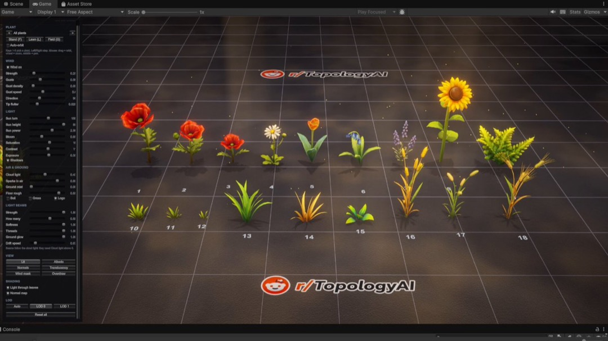
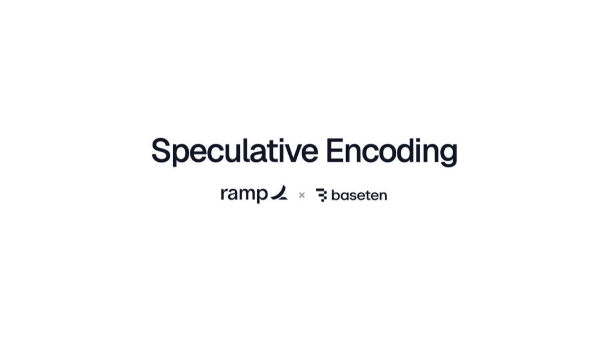
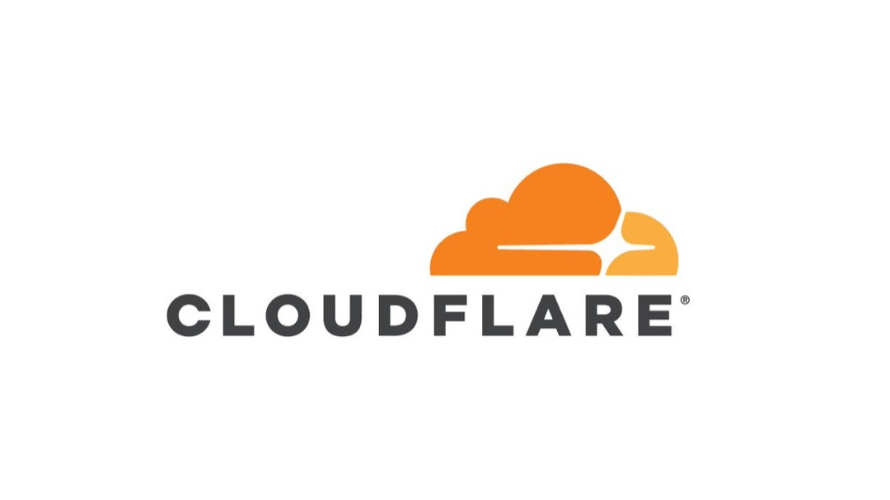
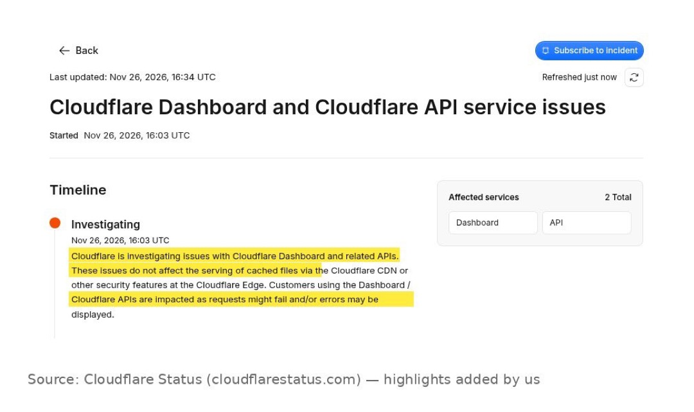
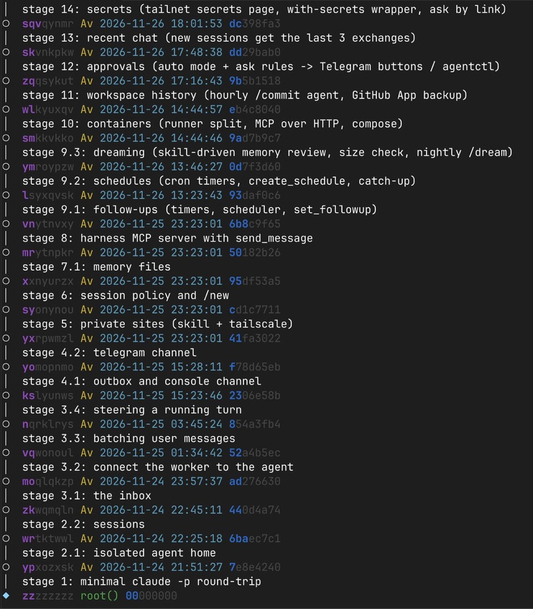
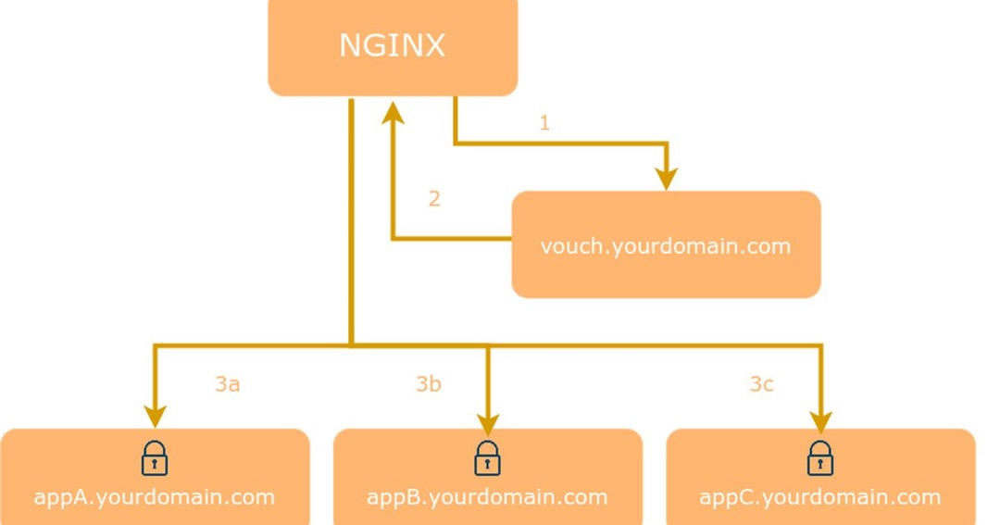
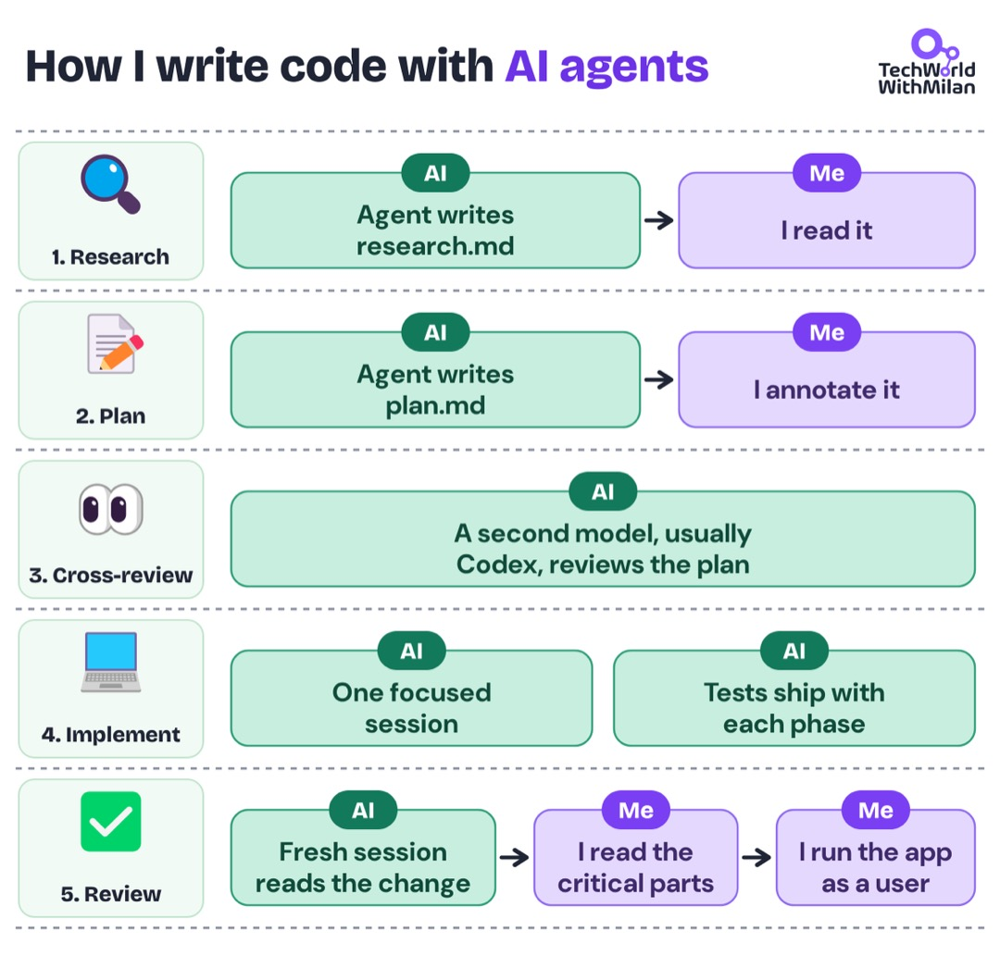

本期速览
01 大模型蒸馏转向On-policy RLAIF四步法
03 Speculative Encoding复用多模型上下文缓存
08 AI代理写99%代码的工程实践
01｜大模型蒸馏转向On-policy RLAIF四步法
来源（X） · @TigerTide1024 · 2026-11-26 16:43
很多人把这理解成“换个姿势洗数据”，其实漏掉了最核心的工程本质——这是从 Off-policy SFT（抄学霸草稿纸）切向了 On-policy RLAIF（拿学霸当阅卷机，再把阅卷机克隆下来）：
1. 为什么变阵？
OpenAI 刚把 GPT-6.2 Astra/Sol 的思考链黑盒提取率从 54% 压到 0.2%，Anthropic 上线蒸馏分类器，叠加 CISA 建议对可疑蒸馏账号“不封号但暗中切弱模型投毒”。拿不到原始 CoT，硬抄最终答案只会训废模型。
2. 这四步真正妙在哪？
第一步让美国模型先答，是为了造一把 Reference 标尺（无参考答案时 LLM 当裁判极易漏判）；第二到四步始终由自家模型生成完整原生 CoT，美国模型只给自然语言梯度。
最关键的是第五步（报道没写但工业界必做）：攒够几百万条“错题+批改意见”后，直接训出本土的 Reward Model / PRM。一旦自家阅卷机训成，就能断奶在本地跑大规模 RL。
3. 为什么美国很难封死？
一是流量长成“长输入、短点评”，和跨国企业日常跑自动化回归评测（Eval）、Code Review 完全重叠，收紧阈值就会大规模误杀真实付费客户；二是模型厂想封杀保溢价，云巨头（比如正向 ByteDance 推进 5 亿美元 Azure OpenAI 大单的 Microsoft）却想赚高毛利转售费。
算笔账：按旗舰 API 均价，这套打法单条收敛样本成本约 $0.093，大概是直接蒸馏的 3 倍，但刷 500 万条核心后训练语料也就百万美元级，ROI 依然极高。
它的边界也很清楚：主战场是写不出客观验证器的复杂办公、商业分析与 Agent 场景（数学代码本地跑编译器就行）；但它只能把底座已有的 Pass@64 潜力压进 Pass@1，救不了预训练代差，上限永远锁死在裁判的眼界之内。这是一套极高性价比的防御性追赶，但不是翻盘筹码。
02｜Fable 5.2将照片转为Unity植被资产
来源（X） · @Stefan_3D_AI · 2026-11-21 22:46
中文译文
Fable 5.2 构建了一套工作流，将照片转化为 Unity 的 AAA 级植被。完整指南与成本
思路：输入一张照片，输出任意艺术风格的游戏就绪植物，用画笔绘制到 Unity 地形上。
技术栈：通过 Hermes Agent 使用 Fable 5.2、Nano Banana Pro、Meshy AI（Smart Low Poly，2.5T）、Blender、Unity 6 URP
亮点：
• 18 个植物模型。一片草叶仅 18 个三角形，且能在风中弯曲
• 三级 LOD：一朵郁金香分别为 500、250 和 100 个三角形
• 法线贴图和透射贴图、风力遮罩、共享图集
• 一张普通的水仙花照片在第一次尝试中就变成了可用的 3D 植物
成本：1K 分辨率图像花费 4 美元，Fable 5.2 在 Extra High 模式下运行约 8 小时（Claude Max）
完整指南：https://www.reddit.com/r/TopologyAI/comments/1y1xp6n/i_built_a_workflow_that_turns_photos_into/
原文
Fable 5.2 Built a Workflow That Turns Photos Into AAA-Quality Foliage for Unity. Full Guide and Costs
The idea: one photo in, game-ready plants in any art style out, painted onto Unity terrain with a brush.
Stack: Fable 5.2 via Hermes Agent, Nano Banana Pro, Meshy AI (Smart Low Poly, 2.5T), Blender, Unity 6 URP
Highlights:
• 18 plant models. A grass blade is 18 triangles and bends in the wind
• Three LODs: a tulip is 500, 250 and 100 triangles
• Normal and transmission maps, wind masks, a shared atlas
• An ordinary daffodil photo became a usable 3D plant on the first pass
Cost: $4 of images at 1K, ~8 hours of Fable 5.2 on Extra High (Claude Max)
Full guide: https://www.reddit.com/r/TopologyAI/comments/1y1xp6n/i_built_a_workflow_that_turns_photos_into/

03｜Speculative Encoding复用多模型上下文缓存
来源（X） · @omarsar0 · 2026-11-27 00:51
中文译文
强烈推荐阅读。
这是一个非常巧妙的思路，可以帮助扩展多智能体集群。
所提出的技术名为推测性编码（speculative encoding），让支持的模型复用已经花在处理相同上下文上的计算。
当多个智能体需要该上下文，或任务在模型之间迁移时，这可以减少延迟。
例如，想象多个智能体在审查一份非常长的合同。一个模型先处理它；推测性编码将其内部表示转换为一个近似缓存，另一个模型可以用它来回答关于终止条款的问题。
这也可以补充模型路由，即不同任务被分配给更强或更便宜的模型。切换模型通常意味着要重新处理共享上下文，因为它们的内部缓存不能直接互换。对于长文档和频繁交接，这种重复的预填充可能成为瓶颈。
这里还有很多需要弄清楚的地方。在整个智能体工作流中这能节省多少速度？在反复交接中，翻译对答案质量有何影响？以及翻译成本何时会超过节省的成本？
我认为这是一个非常有前景的研究方向。
原文
Highly recommended read.
It's a really neat idea that could help scale multi-agent swarms.
The proposed technique, called speculative encoding, lets supported models reuse computation already spent processing the same context.
This could reduce delay when several agents need that context or when a task moves between models.
For example, imagine several agents reviewing a very long contract. One model processes it first; speculative encoding translates its internal representations into an approximate cache another model can use to answer questions about termination clauses.
This could also complement model routing, where different tasks go to stronger or cheaper models. Switching models usually means processing the shared context, because their internal caches aren't directly interchangeable. With long documents and frequent handoffs, that repeated prefill can become a bottleneck.
There's a lot more to figure out here. How much speed does this save across a complete agent workflow? How does translation affect answer quality over repeated handoffs? And when does the translation cost outweigh the savings?
I think it's a very promising research direction.
引用内容
Ramp Labs @RampLabs
中文译文
多智能体集群不应该需要多次读取上下文。隆重推出推测性编码，一个 2.35B 的 MoE，可直接在任何模型的隐藏状态之间进行转换。在 7 个模型上，它保持了 96.9% 的基础准确率，并在长文档上将预填充延迟降低最多 7.5 倍。
原文
Multi-agent swarms shouldn't have to read context more than once. Introducing speculative encoding, one 2.35B MoE that directly translates between any model's hidden states. Across 7 models, it keeps 96.9% of base accuracy and cuts prefill latency by up to 7.5× on long documents.

04｜Cloudflare仪表盘与API故障
来源（X） · @sysxplore · 2026-11-27 00:42
中文译文
🚨 Cloudflare 的控制面板和 API 宕机了，客户目前无法管理他们的网站。
Cloudflare 表示自 16:03 UTC 起正在“调查 Cloudflare Dashboard 及相关 API 的问题”。
请求可能会失败或显示错误。
网站本身仍在正常加载：Cloudflare 表示缓存文件和边缘安全功能不受影响。
目前尚未给出原因。
原文
🚨 Cloudflare's dashboard and API are down, and customers can't manage their sites right now.
Cloudflare says it's "investigating issues with Cloudflare Dashboard and related APIs" since 16:03 UTC.
Requests may fail or show errors.
Websites themselves are still loading: Cloudflare says cached files and edge security features are not affected.
No cause has been given yet.


05｜Agent Zero在Minecraft中六分钟建灯塔
来源（X） · @Agent0ai · 2026-11-26 22:48
中文译文
你的 AI 智能体，进入任何游戏。
Agent Zero 连接到一个 Minecraft 世界，通过聊天界面在六分钟内建造了一座灯塔（在游戏内也可用），这得益于一个用户生成的插件。
它通过 A0 Launcher 在你自己的电脑上运行。立即安装。免费且开源 👇
原文
Your AI agents, inside any game.
Agent Zero, connected to a Minecraft world, built a lighthouse in six minutes from the chat UI (works in-game too), thanks to a user-generated plugin.
It runs on your own computer through the A0 Launcher. Install now. Free and open source 👇
06｜jj checkpoint记录代码演进过程
来源（X） · @neural_avb · 2026-11-27 00:03
中文译文
我在制作新教程时最喜欢做的事情之一
我保留每一次提交，这样在录制教程时可以轻松切换到任何 jj 检查点。这样我就能展示代码库如何从零开始一步步演变！
附注：这是“always-on”智能体
原文
One of my fav things while I working on a new tutorial
I keep each commit so I can easily switch to any jj checkpoint during recording the tutorial. This way I can show how the codebase evolved step-by-step from scratch!
PS: this is "always-on" agents

07｜vouch-proxy为Nginx提供OIDC单点登录
来源（X） · @KitPloit · 2026-11-27 00:01
中文译文
vouch-proxy——一个使用 auth_request 模块为 Nginx 提供 SSO 和 OAuth / OIDC 登录解决方案 https://ktp.sh/T7CH1e3m2O
原文
vouch-proxy — an SSO and OAuth / OIDC login solution for Nginx using the auth_request module https://ktp.sh/T7CH1e3m2O

08｜AI代理写99%代码的工程实践
来源（X） · @milan_milanovic · 2026-11-27 00:00
中文译文
智能体编写了我 99% 的代码，但我保留了主要部分
我刚刚发布了一期新的简报，我们将讨论我如何用 AI 工具编写代码，以及过去几年发生了什么变化。
当你开发软件时，通常有三个部分：
1. 弄清楚需要构建什么
2. 构建它
3. 检查结果是否足够好
几年前，这些步骤都是我自己做的。最近，第 2 步由 AI 智能体完成。而𝗌𝗍𝖾𝗉𝗌 𝟣 𝖺𝗇𝖽 𝟥 𝗍𝖺𝗄𝖾 𝗆𝗈𝗋𝖾 𝗈𝖿 𝗆𝗒 𝗍𝗂𝗆𝖾 than in the past. 我想确保我提出的是正确的需求，并且最终结果足够好。
2025 年 11 月，当 Opus 4.5 发布时，对我来说有些事情发生了变化。在那之后的几个月里，我仍然会逐行审查 AI 智能体在 PR 中做出的所有代码更改。如今我𝗈𝗇𝗅𝗒 𝗋𝖾𝗏𝗂𝖾𝗐 𝗍𝗁𝖾 𝗆𝗈𝗌𝗍 𝗂𝗆𝗉𝗈𝗋𝗍𝖺𝗇𝗍 𝖼𝗈𝖽𝖾 𝖼𝗁𝖺𝗇𝗀𝖾𝗌（那些无法轻易逆转的更改）。而对于我的一些项目，我已经不再审查任何代码更改了。
与其逐行审查代码更改，我确保在开始编码之前有一个计划。然后我让另一个模型来审查这个计划，并在新的会话中进行代码审查。
具体来说，我的文章讨论了：
- 我如何与 AI 智能体合作（我的流程、提示词、AGENTS .md、MCP 服务器、技能、工具等）
- 我那 63 行的 AGENTS .md 文件（现在也在 GitHub 上免费提供）
- 我最喜欢的 AI 智能体提示词，你可以复制使用
- 一个从头到尾的真实案例：为我的一个应用添加功能
- 我如何将 AI 智能体与 Azure 结合使用（Azure CLI）
- 我如何将 AI 智能体与数据库结合使用（只读访问）
- 我的网店项目：用 AI 智能体开发了 2 个月，没有审查过一行 PHP 代码
查看：https://newsletter.techworld-with-milan.com/p/agents-write-99-of-my-code-here-is
原文
Agents write 99% of my code, but I kept the main parts
I just released a new issue of my newsletter where we are going to talk about how I code with AI tools, and what changed in the last few years.
When you develop software, you usually have three parts:
1. Figuring out what needs to be built
2. Building it
3. Checking if the result is good enough
A few years ago I was doing all of those steps myself. Lately step 2 is done by AI agents. And 𝘀𝘁𝗲𝗽𝘀 𝟭 𝗮𝗻𝗱 𝟯 𝘁𝗮𝗸𝗲 𝗺𝗼𝗿𝗲 𝗼𝗳 𝗺𝘆 𝘁𝗶𝗺𝗲 than in the past. I want to make sure that I’m asking for the right thing and that the end result is good enough.
In November 2025 something changed for me when Opus 4.5 came out. For several months after that I was still reviewing all code changes made by AI agents for each line in a PR. These days I 𝗼𝗻𝗹𝘆 𝗿𝗲𝘃𝗶𝗲𝘄 𝘁𝗵𝗲 𝗺𝗼𝘀𝘁 𝗶𝗺𝗽𝗼𝗿𝘁𝗮𝗻𝘁 𝗰𝗼𝗱𝗲 𝗰𝗵𝗮𝗻𝗴𝗲𝘀 (that cannot be reversed easily). And for some of my projects I’m not reviewing any code changes anymore.
Instead of reviewing code changes line by line I made sure that there’s a plan before I start with coding. Then I ask another model to review the plan, and there’s a code review in a new session.
In particular, my article talks about:
- How I work with AI agents (my process, prompts, AGENTS .md, MCP servers, skills, tools, etc.)
- My 63 line AGENTS .md file (now also on GitHub for free)
- My favorite prompts for AI agents that you can copy & use
- A real life example from start to finish: adding features to one of my apps
- How I use AI agents with Azure (Azure CLI)
- How I use AI agents with databases (read-only access)
- My webshop project: 2 months of development with AI agents & not a single line of PHP code reviewed
Check it out: https://newsletter.techworld-with-milan.com/p/agents-write-99-of-my-code-here-is
